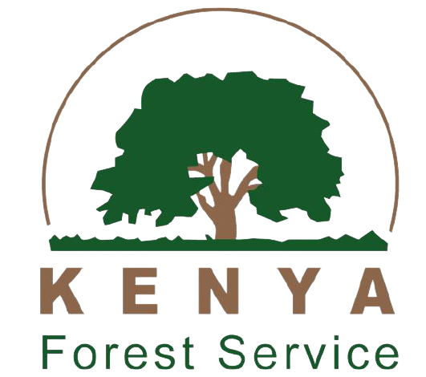
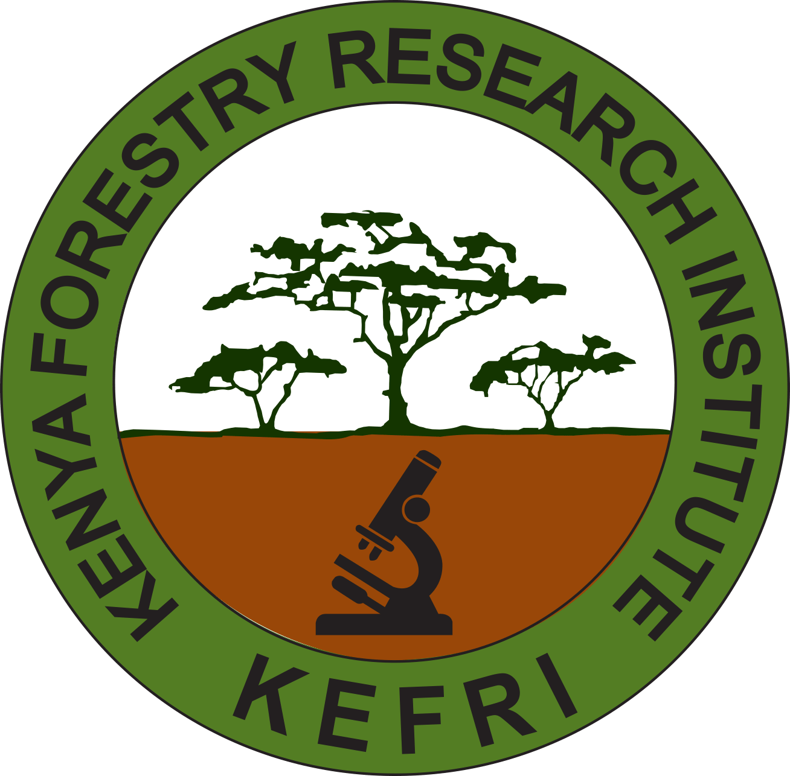
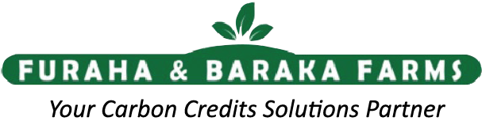

Kenya Forest Service
Co-implementation of reforestation and shared water infrastructure — aligning our tree-planting with national forest strategy and protected landscapes.
Lasting resilience is built through partnership. We deliver alongside government, science, academia and enterprise — each bringing rigour, reach and accountability to the work.
From reforestation science to independent academic verification, each partner strengthens a different link in our chain of accountability.

Co-implementation of reforestation and shared water infrastructure — aligning our tree-planting with national forest strategy and protected landscapes.

Scientific selection of native species and impact research — ensuring every seedling is right for its ecosystem and tracked for survival.
Formal MoUs for permits, co-funding and political alignment — embedding our work in county development plans for permanence.
Independent academic verification of our impact data and methodology — so our numbers withstand the scrutiny of donors and auditors alike.
ICT and coding education delivered in our water-secure schools — turning water security into digital opportunity for the next generation.

GPS-tagging services for our reforestation programme — the technology backbone that lets us track all 2M+ trees to survival, not just planting.
A coalition spanning government, science, academia & enterprise
Whether you fund, research, govern or supply — there's a place for your organisation in engineering resilience across the ASALs.